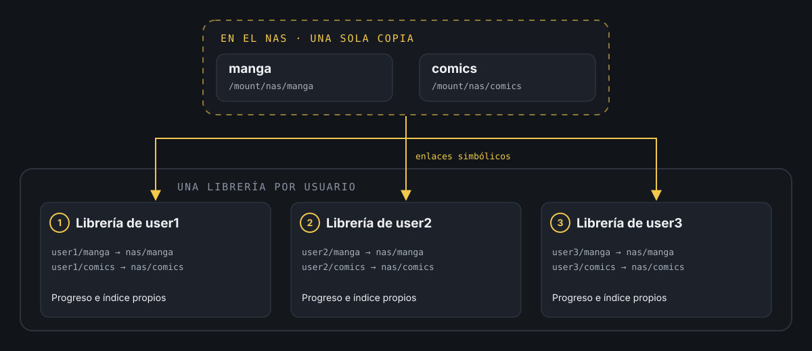
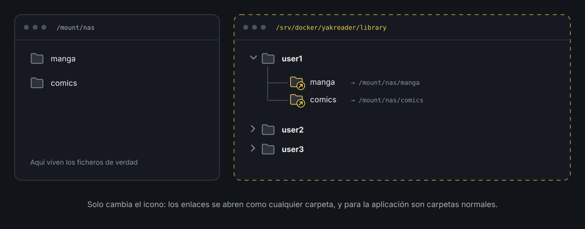

Usa enlaces simbolicos para evitar duplicados.
El problema con Yakreader
¿Tienes una aplicación que no gestiona usuarios y quieres que la usen varias personas? Eso me pasaba con Yakreader, mi lector de cómics y manga.
Yakreader no tiene usuarios, y en un lector el progreso importa: por qué número vas de cada serie, qué páginas has marcado y qué tienes pendiente. Si varias personas comparten la misma librería, todo eso se mezcla.
Si quería montar bibliotecas separadas para varias personas de casa, la opción que parecía obvia era triplicar los ficheros de origen, una copia completa del manga y los cómics por cada persona. Y espacio en disco no me sobra precisamente.
Al final la solución no tiene nada de exótico ni es exclusiva de Yakreader: enlaces simbólicos. Sirve para cualquier aplicación con el mismo problema, da igual que gestione lecturas, descargas, música o lo que sea.
El dilema
La opción más rápida sería apuntar directamente a la carpeta de origen desde cada librería: que los tres usuarios de Yakreader lean de la misma ruta. El problema es que, para la mayoría de estas aplicaciones, la carpeta que escanean no es solo un listado de ficheros. Es también la base sobre la que se construye todo lo demás.
Si tres usuarios comparten exactamente la misma carpeta de origen, comparten también:
- El progreso de lectura o reproducción. Si la app guarda el avance por ruta de fichero en vez de por usuario, marcar un capítulo como leído lo marca para todos.
- Los metadatos y la organización. Renombrar, mover o borrar algo en la carpeta de un usuario afecta a los demás, porque en realidad es la misma carpeta.
- El propio escaneo de la librería. Algunas apps generan su índice o caché a partir de la ruta exacta, así que compartir ruta es compartir también ese índice.
La alternativa de toda la vida, duplicar los ficheros por usuario, soluciona esto a lo bruto, pero multiplica el espacio en disco por cada copia y obliga a mantener todas las copias sincronizadas cuando llega contenido nuevo. Para un NAS con varios terabytes de manga y cómics, no compensa.
El término medio: enlaces simbólicos
Un enlace simbólico (symlink) es un fichero especial que no contiene datos, solo una ruta a otro fichero o carpeta. Cuando una aplicación abre ese enlace, el sistema operativo la redirige de forma transparente al destino real. Para la aplicación, es indistinguible de una carpeta normal con sus propios ficheros dentro.
Esto encaja perfectamente con el problema de antes. La idea es separar dos cosas que hasta ahora iban juntas por obligación:
- Dónde vive el contenido de verdad, una única copia en el NAS o en el disco que toque.
- Por dónde lo ve cada librería, una ruta distinta por usuario o por aplicación, que apunta a esa misma copia mediante un enlace.
Así, cada librería de Yakreader escanea su propia carpeta, con su propio índice y su propio progreso de lectura, pero «por debajo» todas están leyendo exactamente los mismos ficheros. Si llega un tomo nuevo a la carpeta de origen, aparece a la vez en las tres librerías sin tocar nada más. Y si un usuario reorganiza su vista (aunque en este caso solo haga falta un enlace por tipo de contenido), no afecta al original ni al resto.
El mismo patrón sirve para cualquier app con el mismo problema: un gestor de descargas que alimenta varias aplicaciones, una biblioteca de música que quieres ver organizada de formas distintas según el reproductor, o cualquier caso en el que «una fuente, varias vistas» sea justo lo que necesitas.
Cómo queda el flujo

Cada enlace apunta al mismo contenido real, pero cada librería escanea solo su propia ruta: progreso, caché e índice quedan separados por diseño.

Así lo vería cualquiera en un explorador de ficheros. Las carpetas enlazadas solo se distinguen por el icono, y las aplicaciones compatibles con enlaces simbólicos las tratan igual que una carpeta normal.
En Linux o macOS (bash)
Partimos de dos carpetas de origen ya montadas (por ejemplo, un recurso de red del NAS montado en el sistema de ficheros local):
/mount/nas/manga/mount/nas/comicsY queremos que tres usuarios de Yakreader, cada uno con su propia librería, vean ese mismo contenido sin duplicarlo. Primero creamos la estructura de carpetas donde Yakreader va a escanear:
mkdir -p /srv/docker/yakreader/library/user1mkdir -p /srv/docker/yakreader/library/user2mkdir -p /srv/docker/yakreader/library/user3Y ahora, un enlace simbólico por usuario y por tipo de contenido:
ln -s /mount/nas/manga /srv/docker/yakreader/library/user1/mangaln -s /mount/nas/comics /srv/docker/yakreader/library/user1/comics ln -s /mount/nas/manga /srv/docker/yakreader/library/user2/mangaln -s /mount/nas/comics /srv/docker/yakreader/library/user2/comics ln -s /mount/nas/manga /srv/docker/yakreader/library/user3/mangaln -s /mount/nas/comics /srv/docker/yakreader/library/user3/comicsln -s origen destino crea el enlace. El orden importa: primero la ruta real, después la ruta del enlace que se va a crear.
Para comprobar que ha quedado bien:
ls -la /srv/docker/yakreader/library/user1Debería verse algo así, con la flecha indicando a dónde apunta cada enlace:
lrwxrwxrwx 1 manuel manuel 16 oct 30 11:00 manga -> /mount/nas/mangalrwxrwxrwx 1 manuel manuel 17 oct 30 11:00 comics -> /mount/nas/comicsA partir de aquí, en Yakreader solo hace falta apuntar la librería de cada usuario a su carpeta correspondiente (/srv/docker/yakreader/library/user1, etc.), y cada una escaneará el mismo contenido real sin que exista ninguna copia de más.
En Windows (PowerShell)
El mismo planteamiento funciona igual en Windows. Aquí partimos, por ejemplo, de una unidad de red mapeada (W:), aunque podría ser perfectamente una carpeta en tu propio disco:
W:\libreria\mangaW:\libreria\comicsCreamos las carpetas de cada usuario:
New-Item -ItemType Directory -Path "C:\yakreader\library\user1"New-Item -ItemType Directory -Path "C:\yakreader\library\user2"New-Item -ItemType Directory -Path "C:\yakreader\library\user3"Y los enlaces simbólicos, con New-Item -ItemType SymbolicLink:
New-Item -ItemType SymbolicLink -Path "C:\yakreader\library\user1\manga" -Target "W:\libreria\manga"New-Item -ItemType SymbolicLink -Path "C:\yakreader\library\user1\comics" -Target "W:\libreria\comics" New-Item -ItemType SymbolicLink -Path "C:\yakreader\library\user2\manga" -Target "W:\libreria\manga"New-Item -ItemType SymbolicLink -Path "C:\yakreader\library\user2\comics" -Target "W:\libreria\comics" New-Item -ItemType SymbolicLink -Path "C:\yakreader\library\user3\manga" -Target "W:\libreria\manga"New-Item -ItemType SymbolicLink -Path "C:\yakreader\library\user3\comics" -Target "W:\libreria\comics"Una diferencia importante respecto a Linux: para crear symlinks en Windows normalmente necesitas ejecutar PowerShell como administrador, o tener activado el modo desarrollador (Configuración → Privacidad y seguridad → Para desarrolladores), que permite crearlos sin privilegios elevados.
Para comprobar que el enlace se ha creado:
Get-Item "C:\yakreader\library\user1\manga" | Select-Object LinkType, TargetY debería devolver algo así:
LinkType Target-------- ------SymbolicLink {W:\libreria\manga}Cosas a tener en cuenta
Antes de dar esto por cerrado, unos cuantos matices que conviene conocer:
Si se mueve o se borra el origen, los enlaces se quedan rotos. El enlace solo guarda una ruta, no una referencia robusta al contenido. Si renombras o mueves la carpeta de origen sin actualizar los symlinks, dejan de funcionar y la aplicación verá una carpeta vacía o un error, según cómo lo gestione.
Los permisos del origen mandan. Un enlace simbólico no tiene permisos propios relevantes: lo que importa es si el usuario con el que corre la aplicación puede leer (y, si hace falta, escribir) en la ruta real a la que apunta.
No todas las aplicaciones tratan igual los symlinks. La inmensa mayoría los sigue sin problema, pero alguna, sobre todo si hace comprobaciones de seguridad estrictas, puede negarse a seguir un enlace que salga de su carpeta de trabajo. Merece la pena probar con un caso pequeño antes de montar toda la estructura.
Por qué compensa
Lo que se gana con este montaje es separar dos decisiones que no tienen por qué ir atadas: dónde vive el contenido de verdad, y cómo lo organiza o lo ve cada aplicación o cada persona. Una sola copia real, tantas vistas independientes como hagan falta, sin gastar espacio de más y sin tener que mantener nada sincronizado a mano.
El caso de Yakreader es solo una excusa. El mismo patrón sirve en cualquier sitio donde una aplicación sin gestión de usuarios necesite progresos o configuraciones separadas sobre un mismo fondo de ficheros.
Si has llegado hasta aquí, espero que te haya resultado útil. Entiendo que esta solución no sea apta para todo el mundo, porque dependerá de las aplicaciones que uses y de cómo gestionen la información.